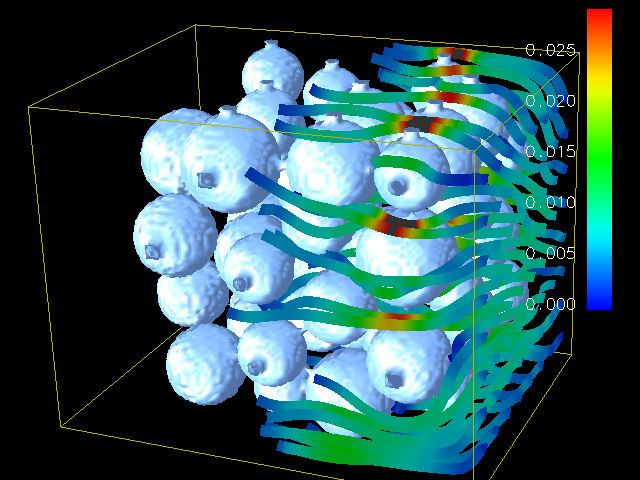

470.lbm
Thomas Pohl <thomas.pohl [at] informatik.uni-erlangen.de>
Computational Fluid Dynmaics, Lattice Boltzmann Method
This program implements the so-called "Lattice Boltzmann Method" (LBM) to simulate incompressible fluids in 3D as described in [1]. It is the computationally most important part of a larger code which is used in the field of material science to simulate the behavior of fluids with free surfaces, in particluar the formation and movement of gas bubbles in metal foams (see the FreeWiHR homepage for animations of the results). For benchmarking purposes and easy optimization for different architectures, the code makes extensive use of macros which hide the details of the data access. A visualization of the results of the submitted code can be seen below (flow through a porous medium, grid size 150x150x150, 1000 time steps).

Flow of a fluid through an array of spheres
The lbm program requires several command line arguments:
lbm <time steps> <result file> <0: nil, 1: cmp, 2: str> <0: ldc, 1: channel flow> [<obstacle file>]
Description of the arguments:
The basic steps of the simulation code are as follows:
For benchmarking purposes, where the SPEC tools are used to validate the solution, the computed results are only stored.
In the Lattice Boltzmann Method, a steady state solution is achieved by running a sufficient number of model time steps. For the reference workload, 3000 time steps are computed. For the test and training workloads, a far smaller number of time steps are computed.
The geometry used in the training workload is different from the geometry used in the reference benchmark workload. Also, the reference workload uses a shear flow boundary condition, whereas the training workload does not. Nevertheless, the computational steps stressed by the training workload are the same as those stressed in the reference run.
The file format which specifies the location of obstacle and fluid cells is a simple ASCII format. The dot character '.' stands for a fluid cell, while all other characters (here '#') denote an obstacle cell. Each line represents the cells along the x axis. After each line a newline has to be included. After a complete x/y plane another newline has to be included.
Below you see an example of an obstacle file for the simulation domain x = 6, y = 5, and z = 3. The red comments just show the corresponding coordinates for each line and must not be included in the obstacle file itself.
...... (y = 0, z = 0) ...#.. (y = 1, z = 0) ..##.. (y = 2, z = 0) .###.. (y = 3, z = 0) ...... (y = 4, z = 0) ...... (y = 0, z = 1) ...... (y = 1, z = 1) ...#.. (y = 2, z = 1) ..##.. (y = 3, z = 1) ...... (y = 4, z = 1) ...... (y = 0, z = 2) ...... (y = 1, z = 2) ...... (y = 2, z = 2) ...#.. (y = 3, z = 2) ...... (y = 4, z = 2)
If the store action '2' has been specified in the command line arguments, a result file containing the 3D velocity vector for each cell is stored.
The default file format is a sequence of binary single precision values (little endian) with the following ordering:
vx(0,0,0), vy(0,0,0),
vz(0,0,0), vx(1,0,0),
vy(1,0,0), vz(1,0,0),
vx(2,0,0), vy(2,0,0),
vz(2,0,0),
...,
vx(X,0,0) vy(X,0,0) vz(X,0,0),
vx(0,1,0), vy(0,1,0),
vz(0,1,0), vx(1,1,0),
vy(1,1,0), vz(1,1,0),
vx(2,1,0), vy(2,1,0),
vz(2,1,0),
...,
vx(X,1,0) vy(X,1,0) vz(X,1,0),
...
vx(0,Y,0), vy(0,Y,0),
vz(0,Y,0), vx(1,Y,0),
vy(1,Y,0), vz(1,Y,0),
vx(2,Y,0), vy(2,Y,0),
vz(2,Y,0),
...,
vx(X,Y,0) vy(X,Y,0) vz(X,Y,0),
...
vx(0,Y,Z), vy(0,Y,Z),
vz(0,Y,Z), vx(1,Y,Z),
vy(1,Y,Z), vz(1,Y,Z),
vx(2,Y,Z), vy(2,Y,Z),
vz(2,Y,Z),
...,
vx(X,Y,Z) vy(X,Y,Z) vz(X,Y,Z)
Although the default format cannot be altered via command line arguments, it is possible to change the output precision to double precision in config.h.
If the computed result should be compared to an existing result (action '1'), the program returns the maximum absolute difference of the velocity comparing each cell individually. If the difference is smaller than a certian threshold, the two results are considered to be equal.
ANSI C
None
Last Updated: 7 March 2006